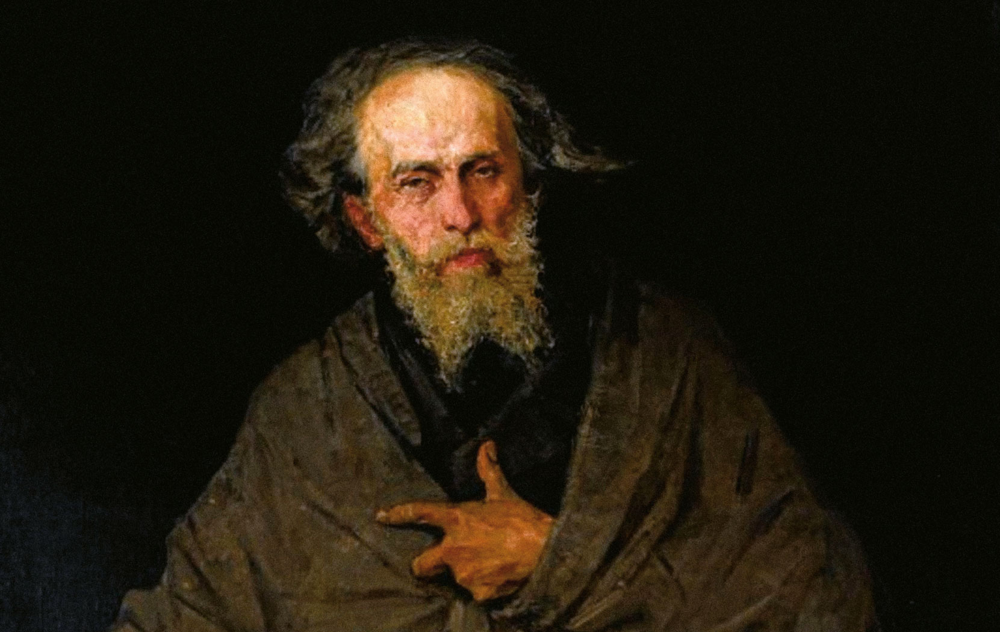
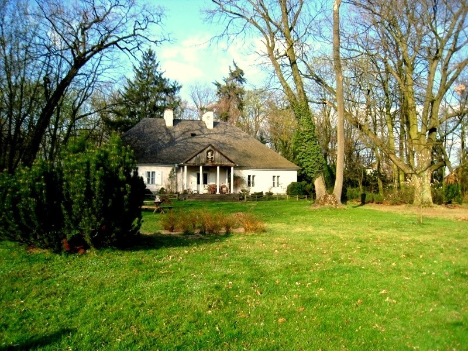
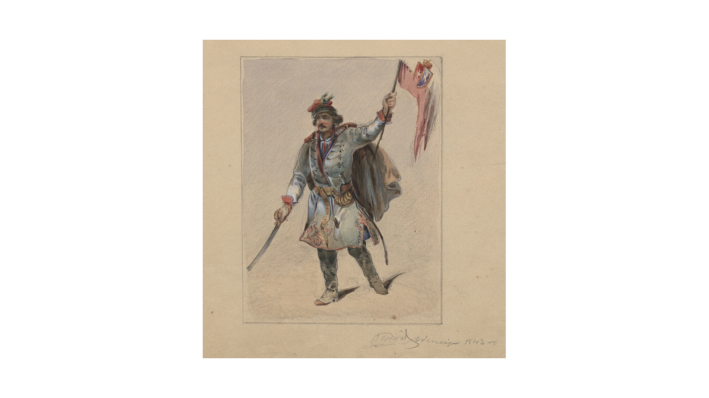

Cyprian Konstanty
Norwid
Pisał w XIX wieku
Co w projekcie?
Spis Treści

Cyprian Kamil Norwid a dokładniej Cyprian Ksawery Gerard Walenty Norwid Cyprian urodził się w majątku matki, mazowieckiej wsi Laskowo-Głuchy (między Radzyminem a Wyszkowem) 24 września 1821roku. Został ochrzczony w kościele parafialnym pod Dąbrówką, gdzie znajduje się tablica pamiątkowa i metryka chrztu. Jego ojcem chrzestnym jest Cyprian Szukiewicz. Na cmentarzu parafialnym znajduje się symboliczny nagrobek jego matki Ludwiki Zdzieborskich. Do bierzmowania Norwid wybrał imię Kamil. Ojciec Norwida Jan (1784-1835) był pełnomocnikiem Radziwiłłów, a później starostą, a matka Ludwika (1798-1825) była jego trzecią żoną. Wcześnie osierocony poeta dorastał wraz ze swoją prababką Hilarią Sobieską z domu Buyn od 1825 roku (sam Norwid lubi podkreślać, że jego przodkiem był król Jan III Sobieski). Norwidowie przeżyli powstanie listopadowe 1830 r. i Warszawę. Cypr uczył się w Liceum Warszawskim ze swoim starszym bratem Ludwikiem, porzucając je przed ukończeniem piątej klasy, aby zapisać się do prywatnej szkoły malarstwa. Pobierał prywatne lekcje malarstwa u słynnego warszawskiego malarza Jana Klemensa Minasowicza. Nieregularna i przerywana edukacja Norwida sprawiła, że był on praktycznie samoukiem. Pierwsze środowisko literackie Novedu tworzyli pisarze skupieni wokół Piśmiennictwa Krajowego pod redakcją Hipolita Skimborowicza. Współpracował z Czeską Warszawą (Seweryn Filleborn, Roman Zmorski, Józef Bohdan Dziekoński, Włodzimierz Wolski) i Karolem Levittoux. W 1841 roku zbliżył się do biblioteki warszawskiej i salonu rodziny Łuszczewskich. Debiutował na łamach National Writing (nr 8/1840) wierszem „Mój ostatni sonet”. W 1825 roku poeta został osierocony, w wyniku czego umieszczono go w domu prababki. W momencie wybuchu powstania listopadowego rodzina Norwidów przebywała w stolicy – Cyprian wspólne z bratem Ludwikiem ukrywali się w murach swojej szkoły. Ze względu na sytuację w kraju przyszły poeta przerwał naukę, jednak później postanowił wznowić edukację, wstępując do szkoły malarskiej.
W 1842 roku wyjechał do Niemiec a dokładniej do Drezna miasta położonego na wschodzie, a dokładniej na Pogórzu Zachodniosudeckim, położone nad Łabą, stolica kraju związkowego Saksonia.
Podróżował do Wenecji i Florencji. W 1844 osiedlił się przy Via Quattro Fontane w Rzymie. Wtedy to narzeczona poety, Kamilla, zerwała zaręczyny, a Norwid poznał Marię z Nesselrodów Kalergis, która stała się jego nieszczęśliwą miłością. W tym okresie stan zdrowia Norwida również się pogorszył.
Do 1846 roku poeta podróżował do Berlina, gdzie uczęszczał na wykłady uniwersyteckie i spotkania miejscowej Polonii. Był to czas intensywnego zaangażowania społecznego, artystycznego i politycznego Norwida. Aresztowany i zmuszony do opuszczenia Prus w 1846 r. udał się do Brukseli. Wiosnę Ludów ponownie spędził w Rzymie, gdzie poznał m.in. Mickiewicza i Zygmunta Krasińskiego. Wraz z Zygmuntem Krasińskim bronił zagrożonego papieża Piusa IX podczas rewolucji rzymskiej 1848 roku.
W latach 1849-1852 przebywał w Paryżu, gdzie poznał Juliusza Słowackiego i Fryderyka Chopina, a także zetknął się w salonie Herwegha Turgenewa i Aleksandra Hercena. Norwid znalazł się w trudnej sytuacji, zarówno z powodów materialnych, jak i złamanego serca, niemiłych komentarzy krytyków i nieporozumień politycznych. Dzieło poety ukazało się w poznańskim Gońcu Polskim, spotkało się jednak z niepochlebnymi recenzjami. Żył w ubóstwie, rozwinęła się w nim głuchota i ślepota.
Poeta postanowił wyemigrować do Stanów Zjednoczonych, co uczynił za radą hrabiego Władysława Zamoyskiego 29 listopada 1852 r. 12 lutego 1853 r. statek Margaret Evans dotarł do Nowego Jorku. Wiosną Norwid otrzymał dobrze płatną posadę w pracowni graficznej. Jesienią poeta dowiedział się o wybuchu wojny krymskiej, w związku z czym zaczął planować powrót do Europy. Pisał do Mickiewicza i Hercena, prosząc ich o pomoc w realizacji planów.
Powrót do Francji i śmierć
W czerwcu 1854 Norwid wrócił do Europy wraz z księciem Marcelinem Lubomirskim, mieszkającym w Londynie, okazjonalnie utrzymującym się z rękodzieła, zanim zdążył wrócić do Paryża. Norwid wznowił działalność artystyczną i z powodzeniem opublikował kilka prac. W 1863 r. wybuchło powstanie styczniowe, które zwróciło uwagę Norwida. Choć sam nie mógł wziąć udziału ze względu na stan zdrowia, starał się pozytywnie wpłynąć na przebieg powstania. W 1866 roku poeta ukończył Vade-mecum, które mimo prób i konserwacji nie zostało opublikowane. Przez kilka następnych lat Norwid cierpiał biedę i gruźlicę. W 1877 roku spotkała go tragedia, gdy jego podróż do Florencji zakończyła się fiaskiem. Chciał więc poprawić stan zdrowia i wysłał swój dobytek, ale książę Władysław Czartoryski nie udzielił poecie obiecanej pożyczki. Kuzyn Norwida, Michał Kleczkowski, umieścił go w Petersburgu. Kazimierza na przedmieściach Ivry pod Paryżem. W 1882 roku św. Kazimierz: "...Tu mieszkał i umarł Olizarowski, tu dogorywa Cyprian Norwid...". Norwid od jesieni leżał w łóżku, często płakał i nikomu nie ufał. Zmarł w przytułku rankiem 23 maja 1883 r. Część notatek Norwida spłonęła po jego śmierci. Został pochowany na cmentarzu Ivry. W 1888 r. jego ciało przeniesiono do polskiego zbiorowego grobu na cmentarzu Montmorency. Następnie, piętnaście lat później, jego szczątki przeniesiono do zbiorowego grobu członków „domu” w Hotelu Lambert. W 2001 roku Norwid otrzymał cenne wspomnienie. W tym czasie ziemia jego grobu została przewieziona do Polski i złożona w krypcie wieszczów narodowych katedry wawelskiej . W 2021 roku, dla uczczenia 200. rocznicy urodzin artysty, Towarzystwo Opieki nad Zabytkami Polski i Grobowcami Historycznymi zostało odnowione ze środków Instytutu Polonica na cmentarzu Montmorency we Francji jego symboliczny nagrobek.
Twórczość Norwida składała się z różnych rodzajów utworów była ona bardzo rozległa i zawierała różną tematyk, a oto lista utworów Cypriana Kamila Norwida:
LIRYKA:
• Dialog zmarłych – akwaforta, sucha igła (1871)
• Pytania – akwaforta (1863)
• Liryki (najważniejsze)
• Bema pamięci żałobny rapsod (1851)
• Coś ty Atenom zrobił, Sokratesie (styczeń 1856)
• Do obywatela Johna Brown (1859)
• W Weronie
• Italiam!, Italiam!
• Moja ojczyzna
• Pieśń od ziemi naszej
• Vade-mecum (1858–1866) – wydane drukiem sto lat po napisaniu
• Moja piosnka (Do kraju tego...)
POEMATY:
• Wesele. Powieść. (1847)
• Pompeja (1848 lub 1849)
• Niewola. Rapsod (1849)
• Promethidion. Rzecz w dwóch dialogach z epilogiem (1851)
• Szczesna. Powieść (1854)
• Epimenides. Przypowieść (1854)
• Wita-Stosa pamięci estetycznych zarysów siedem (1856)
• Quidam. Przypowieść (1855–1857)
• Garstka piasku (1858–1859)
• Fulminant. Rapsod (1863)
• Fortepian Szopena (1863–1864)
• Że piękno to jest... (1865)
• Rzecz o wolności słowa (1869)
• Assunta (1870)
• A Dorio ad Phrygium (1871)
PROZA:
• Wesele. Powieść. (1847)
• Łaskawy opiekun, czyli Bartłomiej Alfonsem (1840)
• Wyjątek z pamiętnika (1850)
• Czarne kwiaty (1856) – wspomnienia dotyczące ostatnich
spotkań z różnymi osobami, na krótko przed ich śmiercią
• Białe kwiaty (1856) – teoretyczne uzasadnienie Czarnych kwiatów
• Bransoletka. Legenda dziewiętnastego wieku (1858)
• Cywilizacja. Legenda (1861)
• Ostatnia z bajek (1882)
• Milczenie
• Pamiętnik Podróżny
NOWELE:
• „Ad leones!” (1883)
• Stygmat (1883)
• Tajemnica lorda Singelworth (1883)
• Archeologia (1866)
• Dwie powieści (1866)
DRAMATY:
• Zwolon (1848-1849)
• Noc tysiączna druga. Komedia (1850)
• Wanda (1851)
• Krakus. Książę nieznany (1851, 1861)
• Słodycz (1855 lub 1856)
• Aktor. Komediodrama (1867)
• Pierścień Wielkiej Damy, czyli Ex-machina Durejko (1872)
• Kleopatra i Cezar (ok. 1870, 1878)
• Za kulisami
OBRAZY:
C.K. Norwid był autorem kilkunastu obrazów olejnych, z których do dziś przetrwały cztery. Alegoryczne przedstawienie odrodzonej Polski pod nazwą Jutrznia od grudnia 2007 r. znajduje się w zbiorach Muzeum Książąt Lubomirskich we Wrocławiu. Inne obrazy to np. Kosynier który został przedsawiony poniżej.

INNE:
• Listy
• Do Najświętszej Panny Maryi. Litania
Akt chrztu poety przechowywany jest w kancelarii parafialnej pobliskiej wsi Dąbrówka, a nagrobek jego matki Ludwiki na miejscowym cmentarzu. W kościele w Dąbrówce znajdują się również tablice upamiętniające jego chrzest, a miejscem urodzenia jest dwór z parkiem należący niegdyś do matki poety (obecnie prywatna własność Karoliny Wajdy, która zaprasza zorganizowane grupy do zwiedzania części dworu, farma).
• Jego imieniem zostały nazwane liczne szkoły podstawowe oraz licea ogólnokształcące.
• Imieniem jego nazwano pociąg EIC relacji: Kraków Główny – Warszawa Centralna – Gdynia Główna
• W Wyszkowie nad Bugiem znajdują się dwa pomniki Cypriana Norwida, w parku miejskim i przy LO, oba autorstwa Zdzisława Skoczka.
• Zarówno uchwałą Sejmu RP z 27 listopada 2022, jak i uchwałą Senatu RP z 2 grudnia 2020, rok 2021 został ustanowiony Rokiem Cypriana Kamila Norwida. Patronom roku 2021 poświęcono wydanie specjalne Kroniki Sejmowej.
• Instytut Książki wraz z Instytutem Kultury Polskiej w Londynie uczcił 200 rocznicę urodzin pisarza krótkometrażowym filmem "Vade-mecum", w którym przedstawiono postać i twórczość artysty.
• Jest on również patronem ławeczki w Parku Ratuszowym w Krakowie w dzielnicy XVIII Nowa Huta, o czym informuje tabliczka. Patroni ławeczek w przestrzeni publicznej są wybierani w ramach projektu Kody Miasta realizowanego przez Krakowskie Biuro Festiwalowe, operatora tytułu Kraków Miasto Literatury UNESCO, którym Kraków został uhonorowany w 2013 roku.